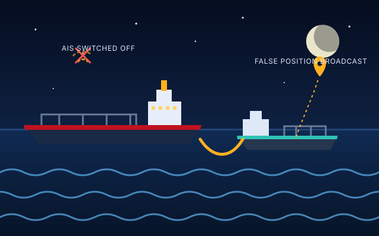

Our project
To study how sanctions are evaded, it helps to know how they are created and checked. This page explains the UN sanctions system and the Panels of Experts whose reports are the evidence base of EXPOSE.
From a Security Council decision to a Panel report
Sanctions
The Security Council decides on measures to pressure a state, group or individual.
Committee
A sanctions committee of Council members oversees how the measures are applied.
Panel
Independent experts investigate violations of these sanctions on the ground.
Reports
The Panel reports its findings. EXPOSE reads and codes them.
1. Sanctions · 2. Imposing and monitoring · 3. Committees · 4. Panels of Experts · 5. Reports · 6. What EXPOSE does
What are UN sanctions?
UN sanctions are measures adopted by the UN Security Council to respond to threats to international peace and security, such as armed conflict, nuclear proliferation or terrorism. Under Article 41 of the UN Charter, the Council can impose measures that do not involve the use of armed force. These measures can seek to change behaviour, constrain activities or support wider peace and security objectives.
Sanctions can take different forms. Most contemporary UN sanctions regimes use targeted measures rather than comprehensive trade embargoes, focusing on particular goods, sectors, activities, entities or individuals. For our research, EXPOSE groups restrictions into four broad categories:
Sources: UN Security Council sanctions · UN Charter: Article 41
How are sanctions imposed and monitored?
Imposing. Sanctions are adopted by a Security Council resolution, normally under Chapter VII of the UN Charter. A resolution needs nine votes out of fifteen and no veto from one of the five permanent members. The resolution defines the measures, their scope and arrangements for oversight; some measures have specified end dates, while others continue until the Council changes or lifts them.
Binding force. Decisions of the Council are binding on all UN Member States. The UN does not have its own police or customs service to enforce sanctions, so Member States are responsible for putting the binding measures into effect through their domestic systems.
Monitoring. Because enforcement depends on states, the Council sets up bodies to follow implementation: a sanctions committee and, in many regimes, a Panel of Experts. The Council can review, amend, extend or lift sanctions, depending on the regime and its mandates.
Resolution adopted
The Council defines the measures, scope and duration.
States implement
Member States apply the measures through national laws and controls.
Committee and Panel follow
They collect information on implementation and on violations.
Council reviews
Findings inform renewals, new listings and adjustments.
Sources: Security Council voting system · UN Charter: Chapter VII
What is a sanctions committee?
A sanctions committee is a subsidiary body of the Security Council created by a sanctions resolution. All fifteen Council members take part, and a chair and vice-chairs are drawn from among the elected members. Committees usually take decisions by consensus.
Its main tasks are to:
- oversee how the sanctions measures are implemented;
- keep and update the list of individuals and entities subject to sanctions;
- consider requests for exemptions and delistings;
- receive information from states and from the Panel of Experts;
- report regularly to the Security Council.
Why it matters for EXPOSE. The committee is the Security Council body that receives the Panel's findings and recommendations. It is composed of Council members, while Panel experts serve in their personal capacities. Their different roles help explain why an expert report may contain more operational detail than a Council resolution.
Sources: UN Security Council sanctions · Example: 1718 Committee
What is a Panel of Experts?
A Panel of Experts (in some regimes called a Group of Experts or Monitoring Group) is a small team of independent specialists appointed to assist a sanctions committee. The Secretary-General appoints the experts at the request of the Council, and the duration and renewal of their mandates vary by regime.
Panels typically include experts in areas such as arms, finance, customs, maritime and aviation, regional affairs, and, more recently, cyber and virtual assets.
Their job is to:
- gather, examine and analyse information on implementation of the sanctions;
- investigate reported violations and evasion on the ground;
- identify individuals and entities that may be violating the measures;
- recommend how to improve implementation.

Not every sanctions regime has a Panel, and Panels can end. The DPRK Panel of Experts is no longer active: its mandate was not renewed in 2024, so its earlier reports remain an important public record of that Panel's work.
Sources: Somalia Panel: mandate · DPRK Panel, 2009–2024
What are the reports of the Panels of Experts?
Panels submit reports under the arrangements set by their mandates, often through a sanctions committee to the Security Council. Many reports are made public as UN documents, identified by a symbol such as S/2019/691.
What they contain
Findings on violations and evasion, case studies, names of vessels, companies and networks involved, and recommendations for the Council, the committee and states.
When they are published
Depending on the mandate, panels may submit interim, midterm, final or special reports. Publication schedules and public access differ by regime.
How they are built
Experts use field visits, state replies, open sources, commercial data and satellite or ship-tracking information, and they assess and corroborate information before presenting findings, within the constraints of their mandate and access.
Sources: UN Panel reports: DRC · UN Official Document System
What does EXPOSE do with these reports?
Panel reports contain detailed information about suspected violations, but the relevant evidence is scattered across documents, mandates and sanctions regimes. EXPOSE brings this material into a common research framework so that individual examples can be examined alongside evidence from other countries and periods.
First, we review the reports and identify the sanctions measures and episodes they discuss. We then code the documented examples according to the type of restriction involved, the broader evasion strategy and the specific tactics used. This makes it possible to distinguish, for example, between evasion that hides the people or destination behind a transaction and evasion that misrepresents its contents.
By organising the available evidence in a searchable database, we aim to make comparisons easier and support further research on sanctions implementation, monitoring and enforcement. Our coding reflects what the source reports document; it does not establish that every suspected violation occurred or that every instance of evasion has been detected.
Read the evidence
Review the reports and identify the episodes and restrictions under discussion.
Code consistently
Classify reported examples by sanctions measure, evasion strategy and specific tactic.
Make comparisons possible
Organise the coded material so users can search it and explore patterns across cases and time.
Descriptions here are a simplified overview. Mandates and procedures vary by regime and change over time, so always check the relevant Security Council resolution.